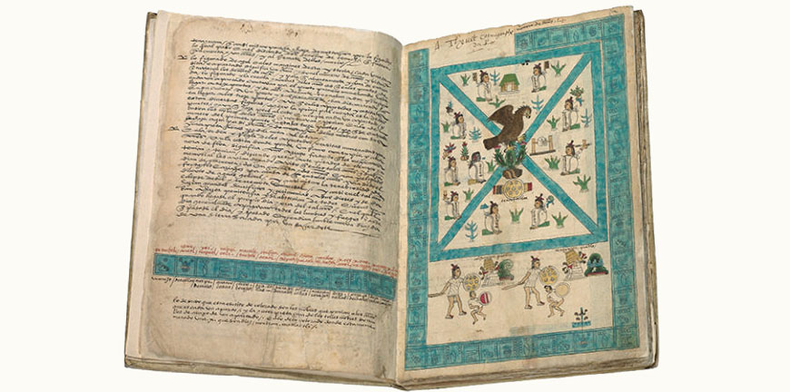

解读《门多萨手抄本》（Codex Mendoza）系列

解读《门多萨手抄本》（Codex Mendoza）系列是我使馆文化部门参考一些历史研究者留下的资料撰写的一系列解读《门多萨手抄本》的文章，通过阿兹特克帝国驻华使馆账号的新浪微博“头条文章”连载发布。
为了能让西班牙国王查理五世（Charles V）了解美洲的文明，“新西班牙”总督安东尼奥·德·门多萨（Antonio de Mendoza）于1541年左右下令制作一本手抄本，现在我们称之为《门多萨手抄本》。这本抄本以阿兹特克人传统的纳瓦特语书写方式为主，附上了西班牙文注解。
手抄本的内容主要分三个部分：第1部分主要叙述了阿兹特克人从十四世纪初建立 特诺奇蒂特兰城（Tenochtitlan）开始至1519年的军事扩张，根据历代统治者的时间顺序排序，展示了阿兹特克帝国的征服战争，但没有记载他们的战败事件；第2部分为特诺奇蒂特兰、特斯科科（Texcoco）及特拉科潘（Tlacopan）组成的三国联盟征服的每个城邦及其贡品清单，这是不断征服取得的成果，其中记录了38个省份和371个城邦；第3部分描绘了阿兹特克贵族、平民的日常生活方式和习俗，这一部分有很多关于他们的儿童教育、学校、结婚、公共工程、法律执行、军政等级、战争等图画。《门多萨手抄本》这本古籍一直被认为是阿兹特克历史、地理、经济、政治、社会、服饰、军装、艺术和风俗研究的重要史料。